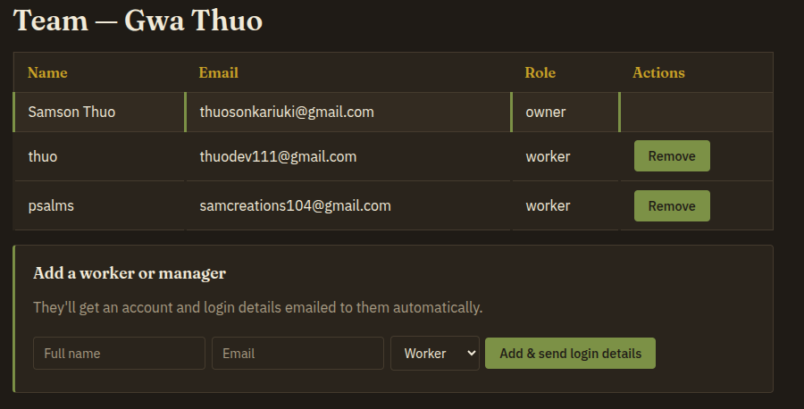

MkulimaHub tracks fields, inputs, stock, and livestock across multiple farms — with role-based access for owners, managers, and workers, and a live view of what's actually happening on the ground.
Farm records usually live in notebooks, memory, or nowhere at all — so nobody can say exactly how much fertilizer is left, or how the herd is doing, until it's a problem.
Four steps from signing up to seeing your whole operation in one place.
Set up your farm with its location and size. You're automatically its owner.
Invite managers and workers by email. Accounts and login details are sent for you.
Fields, input purchases and usage, stock movements, livestock events — recorded as they happen.
A live dashboard rolls everything up: balances, counts, and what's happening per farm.
Not a generic inventory tool — each piece reflects a real decision about how multi-farm operations work.
You can be the owner of your own farm and a worker on someone else's. Every action is checked against your role on that specific farm — not a single global permission.

Input and stock levels are never a single number someone could nudge by accident — they're calculated from a full log of every purchase and use.
Track individually tagged animals or untagged batches, with a full event history for births, deaths, sales, and vet visits.
Add a worker by name and email — an account and login details are created and sent automatically.
A self-serve reset flow by email, so nobody's locked out waiting on an admin.